Bem-vindo à Disney!
Desde a sua criação, a Disney se tornou um símbolo de magia, criatividade e imaginação. Fundada em 1923 por
Walt Disney e Roy O. Disney, a The Walt Disney Company começou como um pequeno estúdio de animação e cresceu até
se tornar uma das maiores e mais influentes empresas de entretenimento do mundo.
Em 1928, a Disney apresentou ao mundo o primeiro personagem animado falante: Mickey Mouse, que rapidamente se
tornou um ícone global e a personificação do espírito Disney. O sucesso de Mickey foi apenas o começo de uma
longa jornada que se estendeu para filmes, parques temáticos, televisão e produtos que encantaram gerações ao
redor do mundo.
A década de 1930 foi marcada por uma revolução na animação com o lançamento do primeiro longa-metragem de
animação, Branca de Neve e os Sete Anões (1937). Esse marco não apenas consolidou a Disney como pioneira da
animação, mas também estabeleceu a fundação para a criação de filmes que se tornariam clássicos, como Cinderela
(1950), A Bela e a Fera (1991), e muitos outros.
Nossos Filmes e Personagens
Descubra os filmes encantadores que fazem parte do universo Disney. De
clássicos eternos a novas aventuras, há magia para todas as idades!
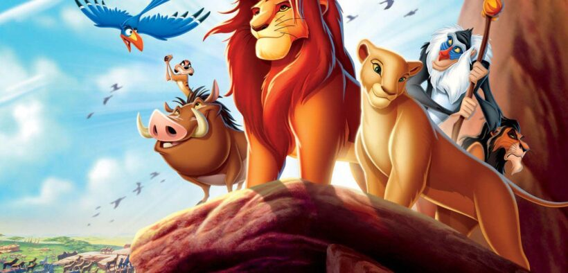
O rei Leão
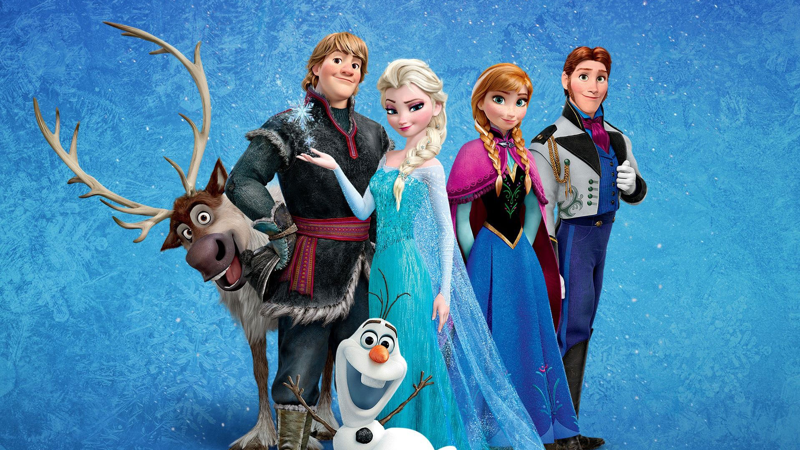
Frozen
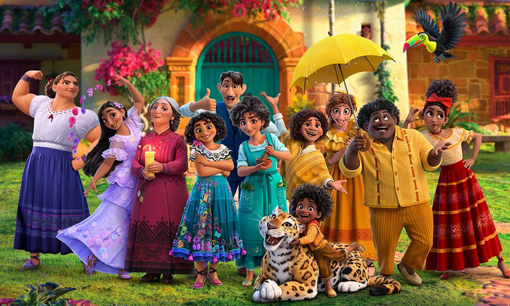
Encanto
Descubra os personagem queridinhos do nosso mundo mágico
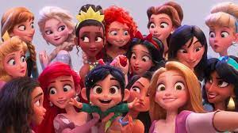
Pricesas
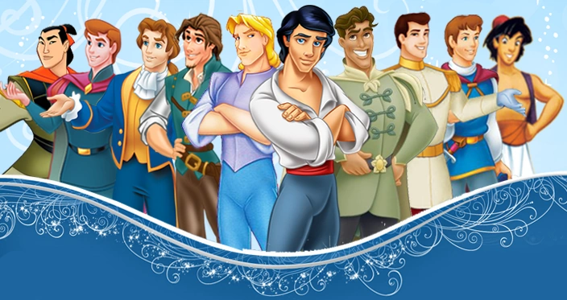
Principes
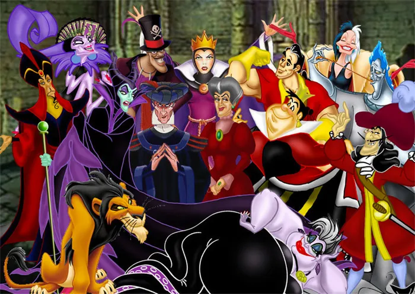
Vilões
Nossos Parques
Explore os destinos mais mágicos do planeta! De castelos encantados a atrações emocionantes, os Parques
Disney oferecem experiências inesquecíveis para todas as idades.Magic Kingdom, Epcot, Disney's Hollywood
Studios, Disney's Animal Kingdom, Disney's Typhoon Lagoon e Disney's Blizzard Beach.
Todos esses parques estão localizados em Orlando, na Flórida, Estados Unidos.
Para visitar os parques, é possível comprar ingressos padrão com base em datas. Com o adicional Park Hopper Plus,
é possível conhecer os parques aquáticos Disney's Typhoon Lagoon e Disney's Blizzard Beach.
Além de Orlando, a Disney também tem parques em: Paris, Tóquio, Hong Kong, Xangai.
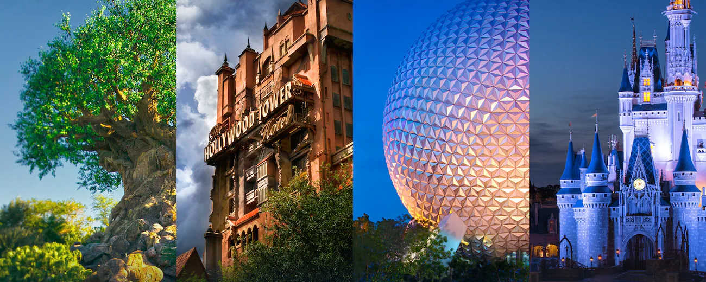

Nossos Hoteis
Hospede-se em um dos hotéis Disney e viva a magia do início ao fim! São diversas opções, desde resorts
econômicos até luxuosos, todos com transporte gratuito para os parques, ambientações temáticas encantadoras e
benefícios exclusivos para quem quer uma experiência completa.
 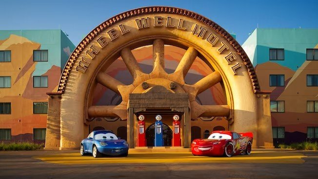
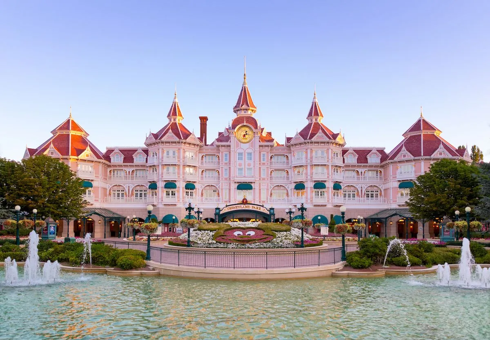
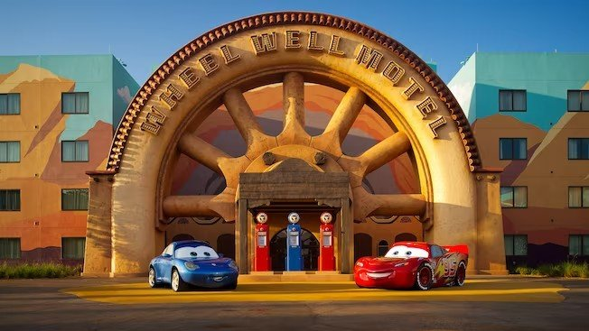
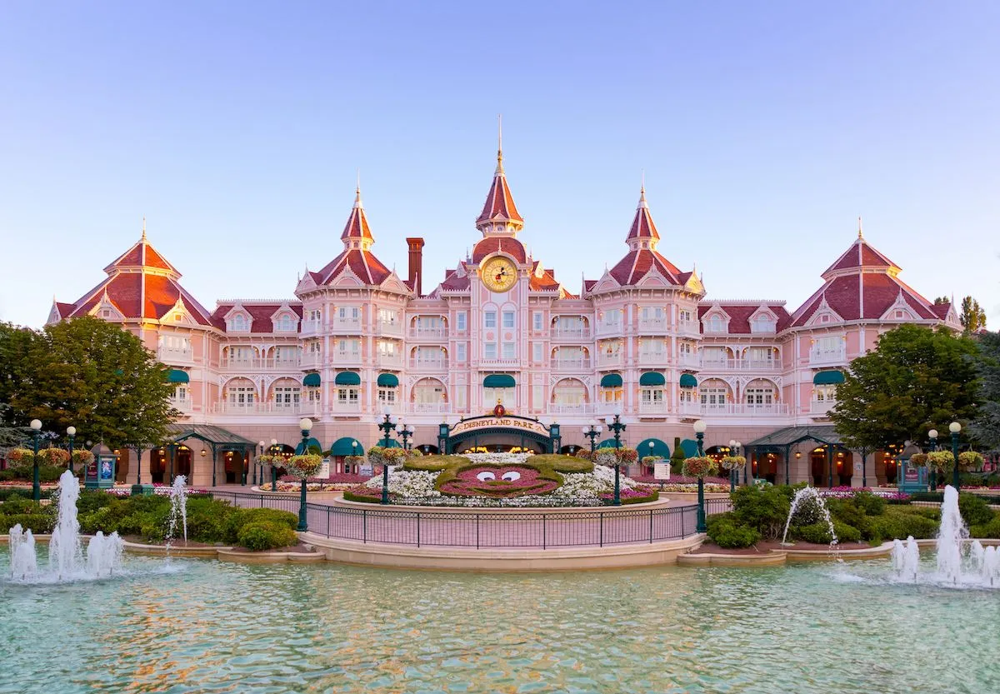
Nossos Restaurantes
Na Disney, cada refeição é uma experiência encantadora — de lanches rápidos a jantares com personagens,
passando por pratos de diversas partes do mundo. Descubra restaurantes temáticos que agradam toda a família e
deixam a sua viagem ainda mais inesquecível.
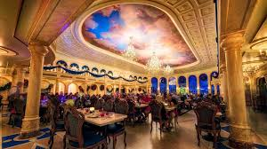
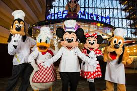
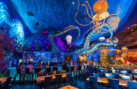